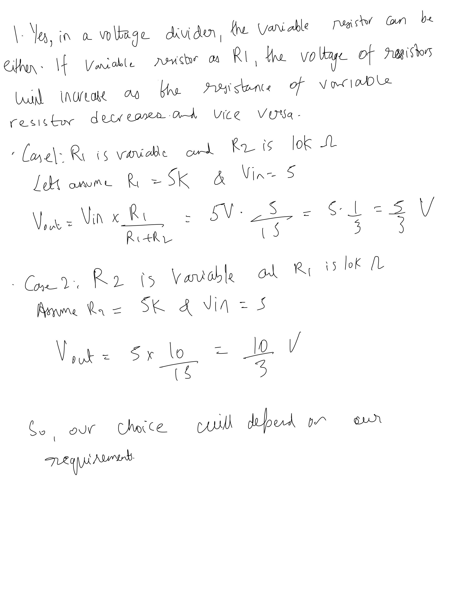
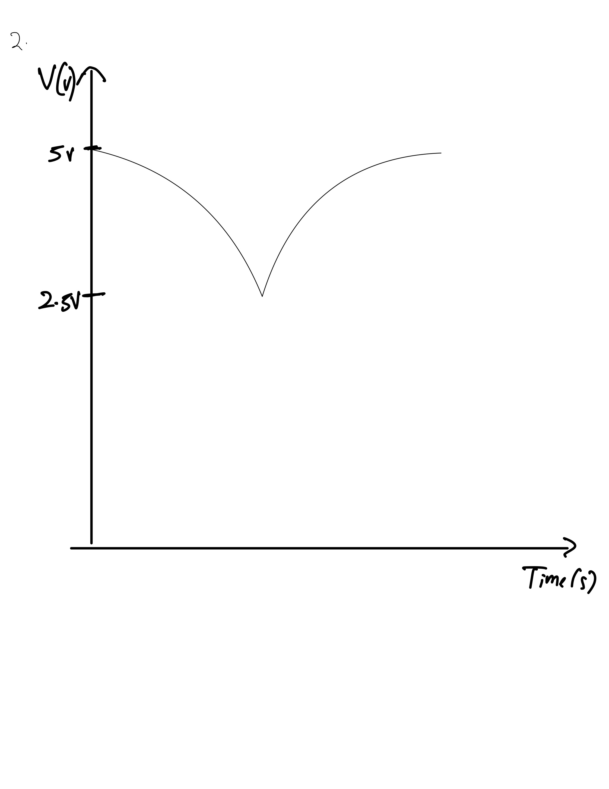
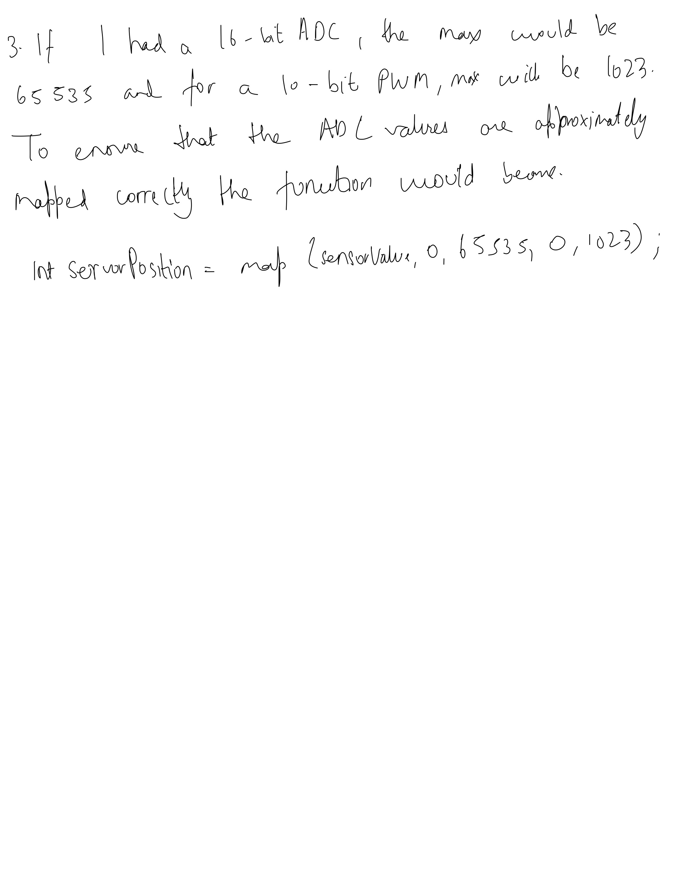

Here is the schematic for my circuit. I chose 220 ohm values for resistors because I worked with 2 red LEDs at two ardruino ports, 9 and 10.In this we needed a 20 mA current and the voltage drop accross each was 1.8V. Using Ohm's law, I found out that the resistor value should be 160 ohm. 220 ohm was the nearest one. V = IR => R = V/I. R = 3.2/0.02 = 160 ohm. For the voltage divider, I used a photoresistor and a 10K resistor. The variable resistor will have a minimum of 0 ohm and maximum of 10k ohm. The entire setuip is supplied by a 5V power supply.

This is my actual circuit on the breadboard. I used two red LEDs, a photoresistor, 2 220 ohm resistors and 1 10K resistor.
/ Define pin numbers
const int photoResistorPin = A5; // Analog pin for photoresistor
const int servorPin1 = 9; // Digital pin for LED1
const int servorPin2 = 10; // Digital pin for LED2
void setup() {
Serial.begin(9600); // Initialize serial communication
}
void loop() {
// Read analog value from the photoresistor
int sensorValue = analogRead(photoResistorPin);
sensorValue = constrain
// Map the analog value to analogwrite range
int servorPosition = map(sensorValue, 512, 1023, 0, 255);
// Control the servorPins only if the condition is met
if (sensorValue > 500):{
analogWrite(servorPin1, servorPosition);
analogWrite(servorPin2, servorPosition);
} else {
break;
}
// Print sensor value to serial monitor
Serial.println(sensorValue);
}

Here is an animated gif showing the operation of my circuit.
Answers to additional questions:
  